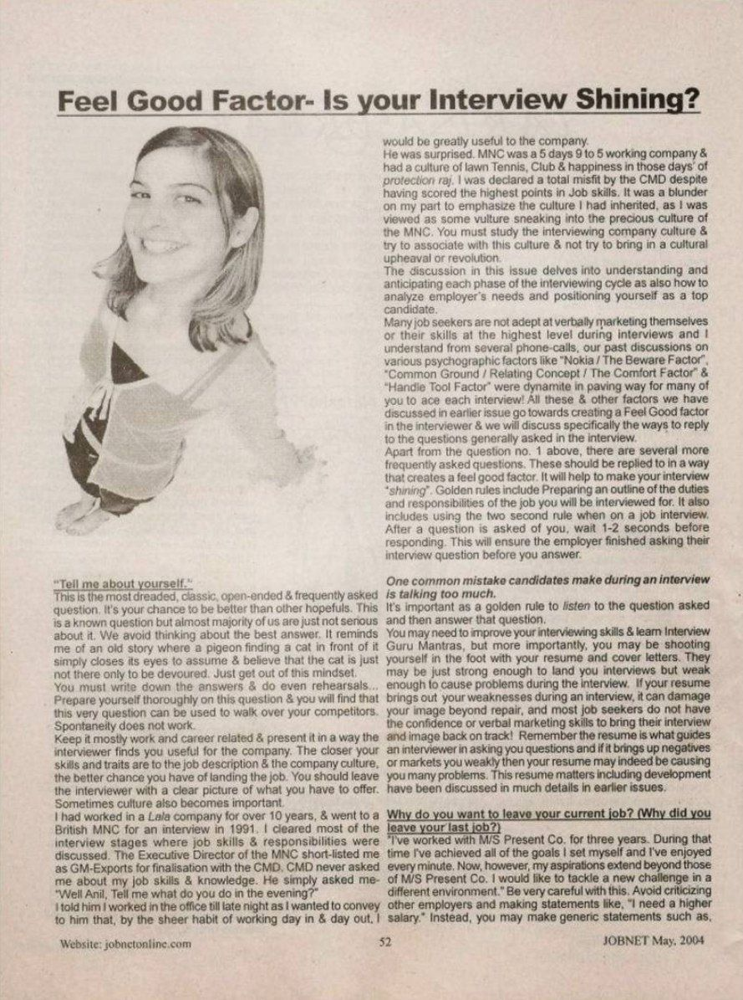
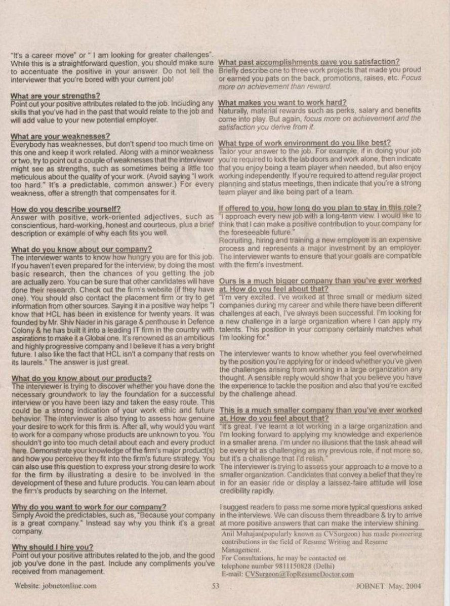

JOBNET Career Intelligence Archive
The interview begins long before the first question. While qualifications matter, candidates are ultimately remembered for the confidence they inspire, the trust they build and the professionalism they demonstrate.
Overview
In this insightful article, Anil Mahajane explored an often-overlooked aspect of interview success — the Feel Good Factor.
While technical knowledge, qualifications and experience are important, candidates are ultimately remembered for the confidence they inspire, the trust they build and the professionalism they demonstrate throughout the interview.
The article encouraged professionals to move beyond simply preparing answers and instead focus on creating a positive, credible and lasting impression. More than two decades later, this principle has become even more important. In today's executive hiring landscape, interviews assess not only competence but also leadership presence, strategic thinking and the ability to inspire confidence.
Original Publication
Original published article — scanned archival pages.


Feel Good Factor – Is Your Interview Shining? · JOBNET · April 2004
Article Transcript
Published in JOBNET
"Tell me about yourself." This is the most dreaded, classic, open-ended and frequently asked question. It's your chance to be better than other hopefuls. This is a known question but almost the majority of us are just not serious about it. We avoid thinking about the best answer. It reminds me of an old story where a pigeon finding a cat in front of it simply closes its eyes to assume and believe that the cat is just not there, only to be devoured. Just get out of this mindset.
You must write down the answers and do even rehearsals. Prepare yourself thoroughly on this question and you will find that this very question can be used to walk over your competitors. Spontaneity does not work. Keep it mostly work and career related and present it in a way the interviewer finds you useful for the company. The closer your skills and traits are to the job description and the company culture, the better chance you have of landing the job.
I had worked in a Lala company for over 10 years, and went to a British MNC for an interview in 1991. The CMD never asked me about my job skills. He simply asked — "Well Anil, Tell me what do you do in the evening?" I told him I worked in the office till late night. The MNC was a 5-day, 9-to-5 working company with a culture of lawn tennis, club and happiness. I was declared a total misfit by the CMD despite having scored the highest points in job skills. You must study the interviewing company culture and try to associate with it.
Many job seekers are not adept at verbally marketing themselves or their skills at the highest level during interviews. Our past discussions on psychographic factors like "Nokia / The Beware Factor", "Common Ground / Relating Concept / The Comfort Factor" and "Handle Tool Factor" were dynamite in paving the way for many of you to ace each interview. All these factors go towards creating a Feel Good Factor in the interviewer.
Golden rules include preparing an outline of the duties and responsibilities of the job you will be interviewed for. Use the two-second rule — after a question is asked of you, wait 1–2 seconds before responding. One common mistake candidates make is talking too much. Listen to the question asked, then answer that question.
Why do you want to leave your current job?
Be very careful with this. Avoid criticising other employers and making statements like "I need a higher salary." Instead, make generic statements such as "It's a career move" or "I am looking for greater challenges." Accentuate the positive.
What are your strengths?
Point out your positive attributes related to the job, including any skills you've had in the past that would relate to the job and add value to your new potential employer.
What are your weaknesses?
Don't spend too much time on this one and keep it work-related. Along with a minor weakness or two, try to point out weaknesses the interviewer might see as strengths — such as being a little too meticulous about quality. For every weakness, offer a strength that compensates for it.
What do you know about our company?
The interviewer wants to know how hungry you are for this job. If you haven't done the most basic research, your chances of getting the job are actually zero. Check the firm's website, contact the placement firm, or get information from other sources. Saying it positively helps enormously.
Why should I hire you?
Point out your positive attributes related to the job, and the good job you've done in the past. Include any compliments you've received from management. Focus on achievement and the value you will bring.
What type of work environment do you like best?
Tailor your answer to the job. If the role requires independent work, indicate that you enjoy working independently while also being a team player when needed. Match the answer to the reality of the position.
If offered to you, how long do you plan to stay in this role?
Recruiting, hiring and training a new employee is an expensive process. The interviewer wants to ensure your goals are compatible with the firm's investment.
Ours is a much bigger company than you've ever worked at. How do you feel about that?
This is a much smaller company than you've ever worked at. How do you feel about that?
Modern Context
Interviews have evolved significantly since this article was first published. Senior professionals today may participate in virtual interviews, AI-assisted screening, behavioural interviews, leadership competency assessments, business case presentations, executive panel discussions and CEO and Board interviews.
At every stage, interviewers evaluate much more than technical capability. They ask themselves:
The Feel Good Factor is created when candidates consistently demonstrate competence, credibility, composure and authenticity. Research continues to show that executive presence, clear communication and the ability to build trust often differentiate candidates with similar technical qualifications.
At every stage, interviewers assess not only what you know, but how you think, communicate and lead.
Then & Now
Key Takeaways
Practical Advice
The most successful interviews are conversations — not performances. They demonstrate competence, curiosity, judgement and the ability to create value for the organisation.
Looking Ahead
Interviews are not won by the person who gives the longest answers — they are won by the professional who leaves the strongest impression of competence, credibility and leadership potential.
Technology will continue to change how interviews are conducted, but it will not replace the importance of human judgement. Final hiring decisions — particularly for leadership roles — continue to be influenced by trust, executive presence, communication and the confidence candidates inspire.
About the Author
Anil Mahajan
MBA (IIFT) · Founder & Director, C-Suite Talent Management Consulting
30+ years of executive search and leadership advisory across India and the Middle East — spanning GCCs, Defence & Aerospace, Healthcare, Consumer Electronics, Steel, Cement and Infrastructure.